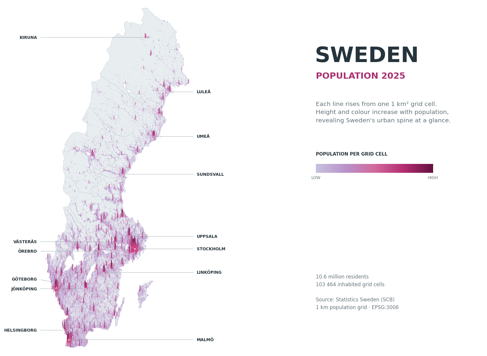

Sweden population spike map with GeoPandas and Matplotlib#
This notebook downloads Statistics Sweden’s official 2025 population grid and creates the map directly in the notebook. Every spike is plotted with Matplotlib from a 1 km² SCB grid cell.
Packages#
Requests downloads the GeoJSON.
GeoPandas reads the geometry and handles EPSG:3006.
pandas provides tabular inspection through GeoPandas.
NumPy performs vectorised height and colour calculations.
Matplotlib draws the complete map and exports the high-resolution PNG.
Pillow creates a compact WebP copy for the Data Lab home page.
Install them once with the next cell.
# Run this cell once if the packages are not installed.
# pip install "geopandas>=1.0" "matplotlib>=3.8" "numpy>=1.26" "pandas>=2.2" "requests>=2.31" "pillow>=10"
GeoPandas: 1.1.4
pandas: 3.0.5
NumPy: 2.5.3
1. Download the SCB population grid#
SCB publishes registered population on a 1 km grid. We request only total population (beftotalt) and geometry (sp_geometry) from the 2025 WFS layer, in SWEREF 99 TM / EPSG:3006. The 39 MB response is cached locally.
Source: Statistics Sweden — Grid statistics
Using cached data: /Users/changliu/Documents/data-lab/geo/sweden_population_map/data/scb_population_1km_2025.geojson
File size: 40.5 MB
2. Read and inspect the geospatial data#
GeoPandas reads every square as a polygon. We keep zero-population cells because they form the pale geographic silhouette. Cell centroids become the spike locations.
CRS EPSG:3006
grid cells 115,118
inhabited cells 103,464
total population 10,578,118
largest cell 24,611
dtype: str
Add the län boundaries, see the boundary informaiton data from the water object notebook.
3. Define the visual encoding#
A linear scale would hide rural variation. The power curve below compresses the range while preserving the order of the actual data. Heights are expressed in map metres because the axes use EPSG:3006.
The colour scale moves from pale lavender to deep magenta. PowerNorm exposes variation among smaller places without losing the strongest urban cores.
